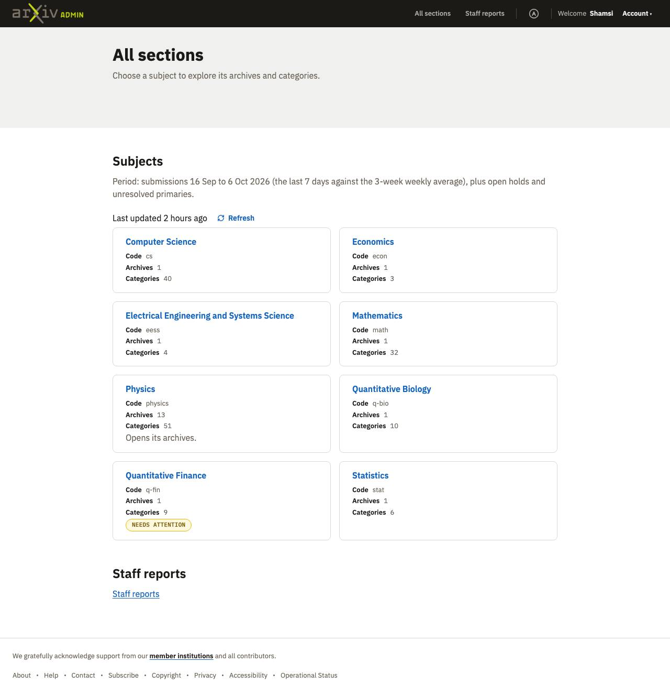
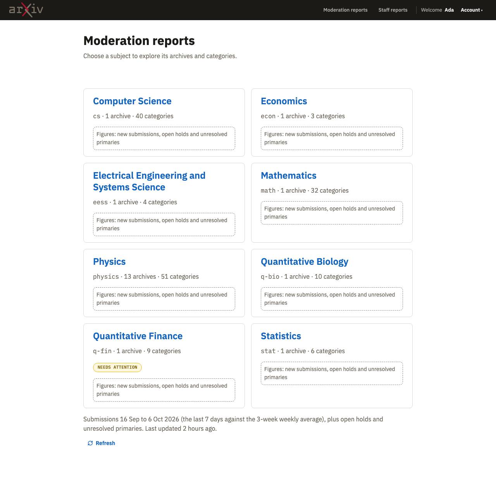
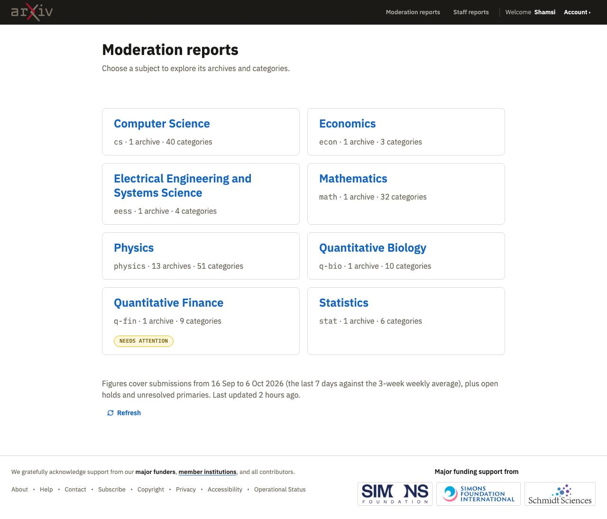
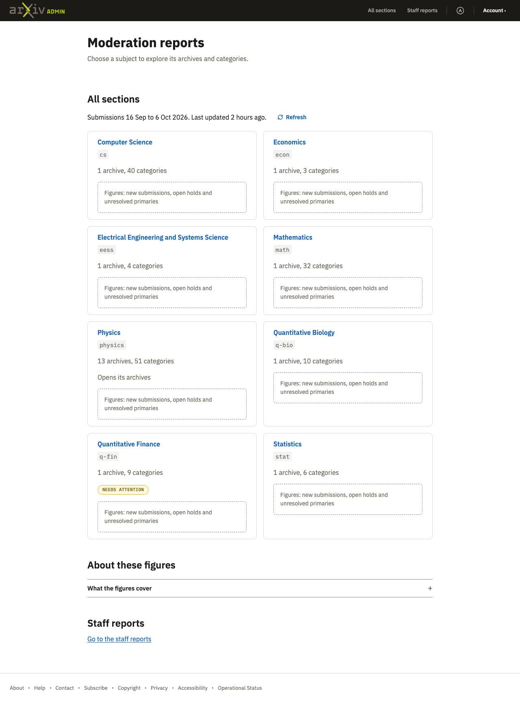

Review pass: before and after
2026-10-13 · design system at commit 94945ef · the spec
Result
Each agent built the two pages, then reviewed and revised them after the draft 'Before you finish' text. Shamsi preferred the revised pages for three of four agents, without knowing which was which. The main content started higher after the review in seven of eight pages: 36 to 210px on activity charts, about 100px on all sections in three builds. The one pair she preferred before had a sort bar that the revision left misaligned. Three agents considered a sidebar and rejected it because it would narrow the charts.
Builds
| Build A1 | Build A2 | Build B1 | Build B2 | Build C1 | Build C2 | Build D1 | Build D2 | |
|---|---|---|---|---|---|---|---|---|
| Model | claude-sonnet-5-5 (before) | claude-sonnet-5-5 (after) | claude-sonnet-5-5 (before) | claude-sonnet-5-5 (after) | claude-opus-5-5 (after) | claude-opus-5-5 (before) | claude-opus-5-5 (after) | claude-opus-5-5 (before) |
| Pages |  All sections (phone, dark) All sections (phone, dark)Activity charts (phone, dark) |  All sections (phone, dark) All sections (phone, dark)Activity charts (phone, dark) |  All sections (phone, dark) All sections (phone, dark)Activity charts (phone, dark) |  All sections (phone, dark) All sections (phone, dark)Activity charts (phone, dark) |  All sections (phone, dark) All sections (phone, dark)Activity charts (phone, dark) |  All sections (phone, dark) All sections (phone, dark)Activity charts (phone, dark) |  All sections (phone, dark) All sections (phone, dark)Activity charts (phone, dark) |  All sections (phone, dark) All sections (phone, dark)Activity charts (phone, dark) |
| Shamsi: verdict | not preferred | preferred | preferred | not preferred | preferred | not preferred | preferred | not preferred |
| Shamsi: what is off | ReadVersion 2 has a better "All sections" page because the main content is higher up on the page. Both versions have too many headings on the All section page. "Subject groups" feels superfluous because there is little content on this page. Also on All sections, the top heading calls them "sections" while the next heading calls them "groups" and that is confusing for users and something that should be called out and clarified. Both versions look nearly identical for the Activity charts page, except that version 1 added what looks like a breadcrumb above the H1 heading. So I prefer version 2 for this page also. Using a breadcrumb is incorrect. arXiv does not have a breadcrumb element in our DS on purpose because our sitemap is broad but shallow. A better place for that link would be in the navigation area of the header. Both versions did not add "staff reports" to the header nav. I think that is the most appropriate place for that link, alongside the link to All sections. Just a small link at the bottom of the page is too hard to find, too obscure, for what is in fact one of the sections of this tool. | ReadVersion 2 has a better "All sections" page because the main content is higher up on the page. Both versions have too many headings on the All section page. "Subject groups" feels superfluous because there is little content on this page. Also on All sections, the top heading calls them "sections" while the next heading calls them "groups" and that is confusing for users and something that should be called out and clarified. Both versions look nearly identical for the Activity charts page, except that version 1 added what looks like a breadcrumb above the H1 heading. So I prefer version 2 for this page also. Using a breadcrumb is incorrect. arXiv does not have a breadcrumb element in our DS on purpose because our sitemap is broad but shallow. A better place for that link would be in the navigation area of the header. Both versions did not add "staff reports" to the header nav. I think that is the most appropriate place for that link, alongside the link to All sections. Just a small link at the bottom of the page is too hard to find, too obscure, for what is in fact one of the sections of this tool. | ReadBoth versions of All sections look the same. Version 1 of the Activity charts page is better because the sort bar in version 2 is not wrapping below or aligned correctly with the sentence "showing the past 3..." that precedes it. I also think a good choice for the about section would have been a sidebar, because on the real page the user would need to scroll down quite far before they would see that content and they might want that context, or atleast want to know that it exists. I am curious to learn if the agents considered and rejected a sidebar. It is not an obvious direction and would require some reasoning and discretion on the part of the agent. | ReadBoth versions of All sections look the same. Version 1 of the Activity charts page is better because the sort bar in version 2 is not wrapping below or aligned correctly with the sentence "showing the past 3..." that precedes it. I also think a good choice for the about section would have been a sidebar, because on the real page the user would need to scroll down quite far before they would see that content and they might want that context, or atleast want to know that it exists. I am curious to learn if the agents considered and rejected a sidebar. It is not an obvious direction and would require some reasoning and discretion on the part of the agent. | ReadI prefer version 1 of the All sections page. This is my favorite one so far because it only used one heading. I think it was a mistake to put the date range and last updated time at the bottom though, because that is important context and only takes up 1 line. The 'about the fitures' section feels unecessary and as a human I would stop to consider if it could be removed completely. Do the agents have that discretion or did we direct them to include that content? Version 1 of the Activity charts page is also preferred. The main content is higher up on the page and it distinguished between a filter for categories and the sort options. I still don't love how sort is presented by any of the agents but I think we can assume it is a gap in the design system (and we already have a plan to fill it). | ReadI prefer version 1 of the All sections page. This is my favorite one so far because it only used one heading. I think it was a mistake to put the date range and last updated time at the bottom though, because that is important context and only takes up 1 line. The 'about the fitures' section feels unecessary and as a human I would stop to consider if it could be removed completely. Do the agents have that discretion or did we direct them to include that content? Version 1 of the Activity charts page is also preferred. The main content is higher up on the page and it distinguished between a filter for categories and the sort options. I still don't love how sort is presented by any of the agents but I think we can assume it is a gap in the design system (and we already have a plan to fill it). | ReadVersion 1 of the All sections page is nice and simple, straightforward, with no superfluous content. The only decision I would make differently as a human is to put the single line about the date range/update time above the cards, because it takes up little space and provides important context. I also prefer version 1 of the Activity charts page because it saw that the list of categories was pushing down the main content and put it inside an accordion. But I still prefer V1 of set 3 which used a category dropdown and placed it near the sort options. | ReadVersion 1 of the All sections page is nice and simple, straightforward, with no superfluous content. The only decision I would make differently as a human is to put the single line about the date range/update time above the cards, because it takes up little space and provides important context. I also prefer version 1 of the Activity charts page because it saw that the list of categories was pushing down the main content and put it inside an accordion. But I still prefer V1 of set 3 which used a category dropdown and placed it near the sort options. |
| Claude: technical verdict | not evaluated | not evaluated | not evaluated | not evaluated | not evaluated | not evaluated | not evaluated | not evaluated |
| Claude: technical notes | ||||||||
| Cost | $0.76 · 3 min · 3 files read | $0.83 · 0 min · 0 files read | $0.80 · 3 min · 4 files read | $0.87 · 0 min · 0 files read | $3.50 · 0 min · 3 files read | $2.72 · 8 min · 4 files read | $2.30 · 0 min · 0 files read | $1.90 · 5 min · 2 files read |


Last round: Moderation and staff reports, round 2
 Build A: Accept with changes |  Build B: Accept with changes |  Build C: Accept with changes |  Build D: Accept with changes |
What the builds had in common
Not written yet.
What we changed in the design system
Not written yet.